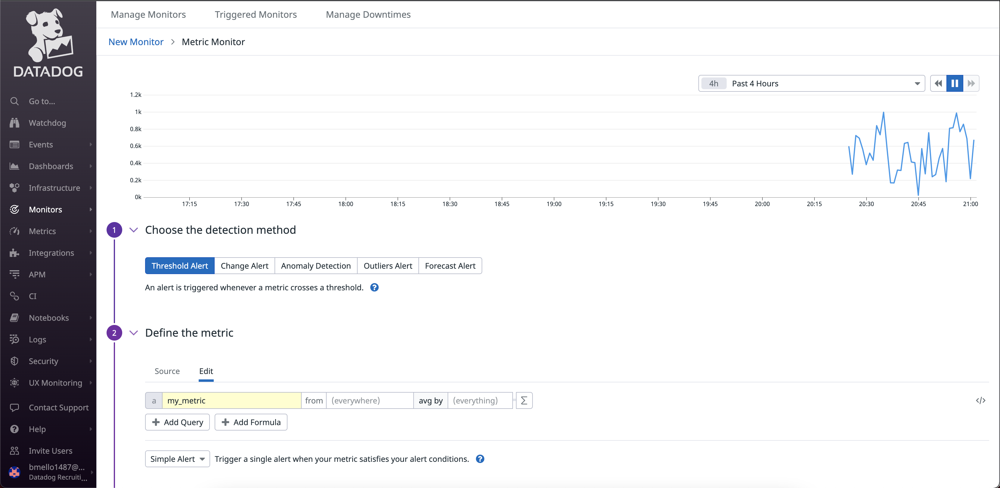
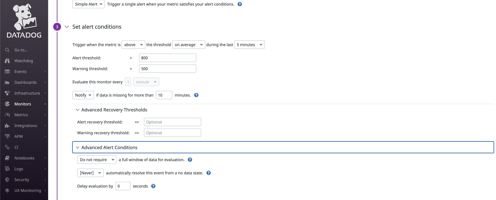
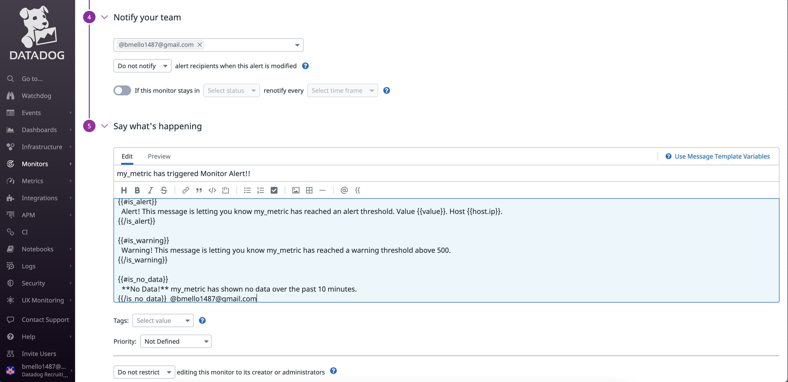
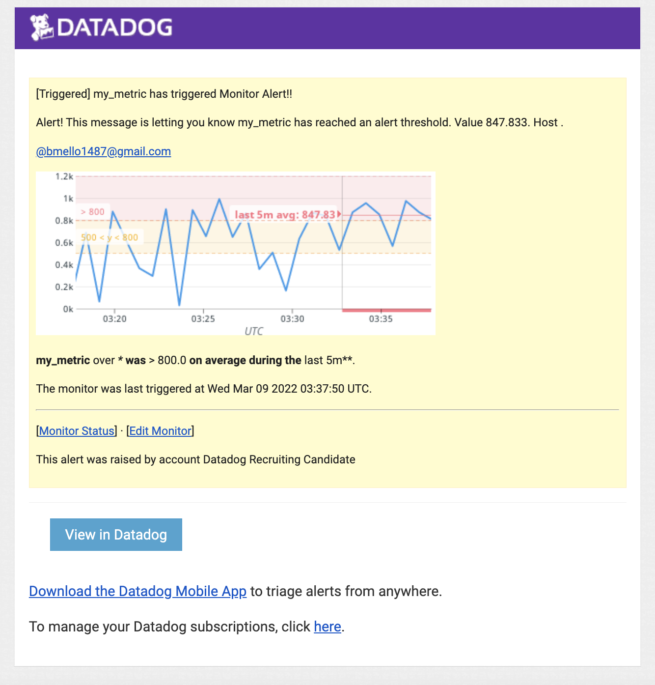
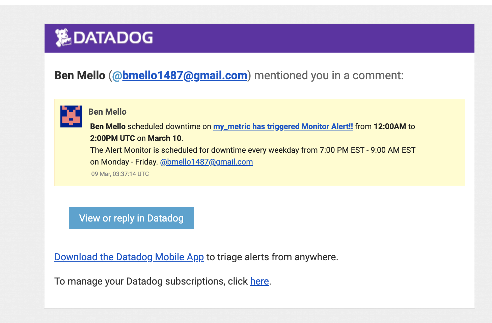
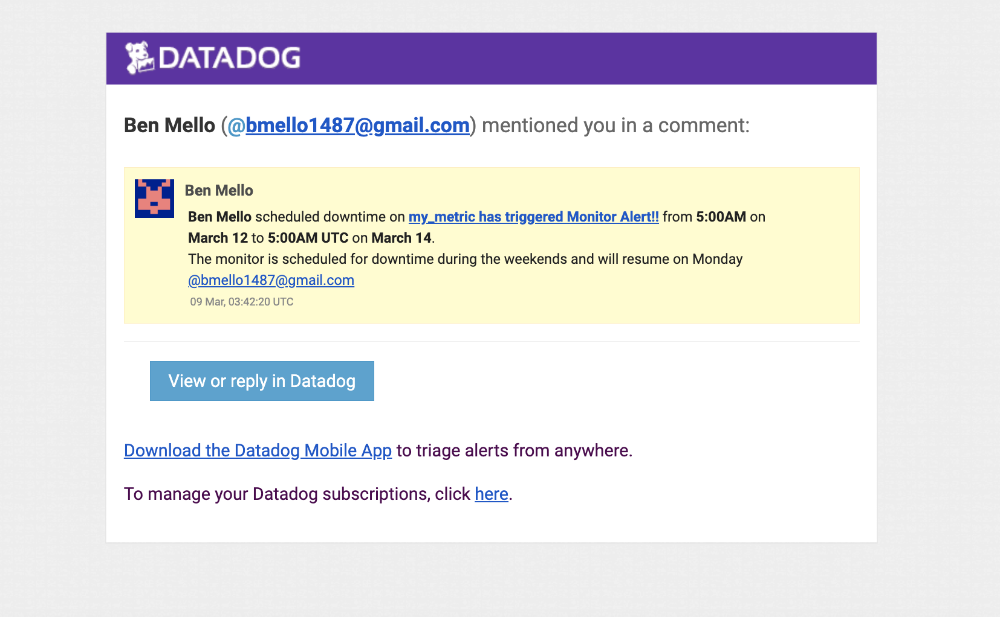

Monitoring Data¶
I created the monitors for my_metric through the Datadog UI
1. In the Datadog UI go to Monitors > New Monitor > select my_metric from the “Define The Metric” category

2. Set the Alert Threshold of 800, the Warning Threshold of 500, and a notification email to be sent whenever data is msising for more than 10 minutes.

3. Set up email notifications depending on the Alert

4. Email triggered and sent because of threshold

Bonus:
Scheduled downtime alert from 7PM to 9AM daily on M-F

Scheduled downtime alert every week for all day Saturday-Sunday
